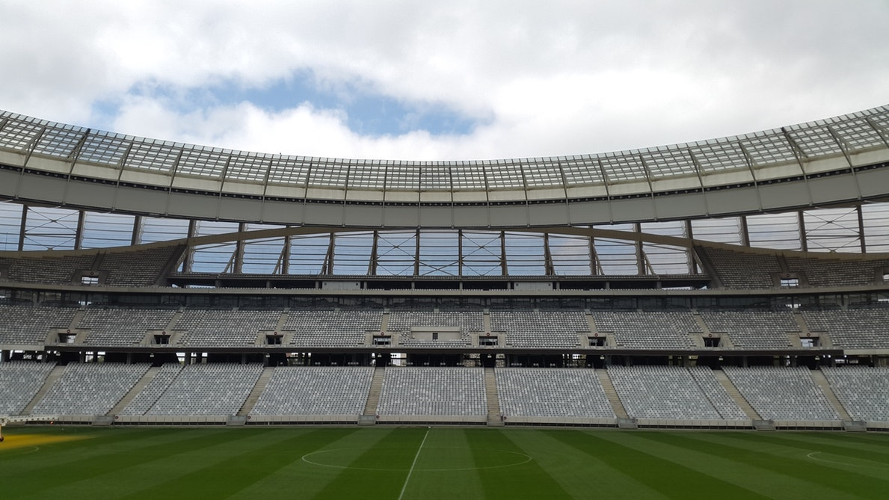
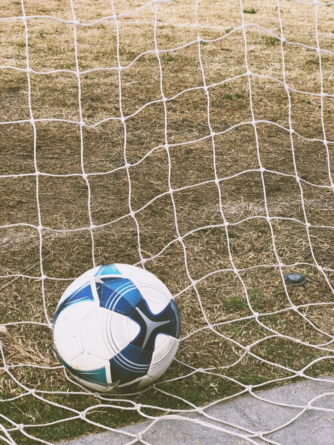
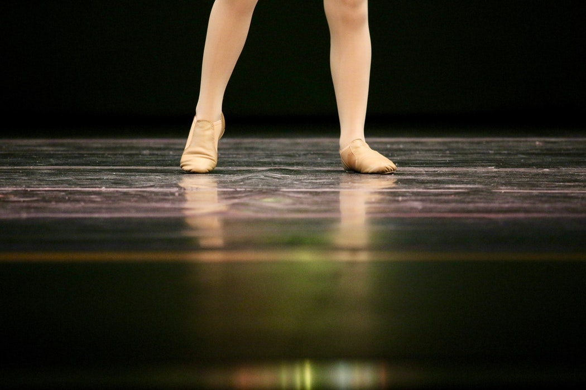

Camogie
- I have an interest in all sport but I have been very successful at camogie.
- I coach the underage camogie teams in my local club.
- I was an active member of the Coachford College G.A.A teams.
- Three Camogie county final A medals with Aghabullogue.
- I have a county junior A county and Munster camogie medal with Coachford College.
- I have had the privilege to be in an All-Ireland school camogie final in 2016.
 
Irish Dancing
- I started Irish dancing when i was four years old in my local hall.
- When i started primary school I joined a team of eight girls
- We used to enter Scor competitions, here we would dance a figure and a set.
- I danced until I was 16 and I won three county titles.
- In 2010 we featured in a TV series called Scor Encore on TG4
